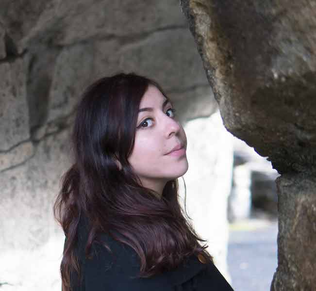

About Me
Hello! My name is Lorena Alvarez and I'm current CSUN Multimedia major with a passion for visual art. I myself love travelling, see the beauty the world has to offer and use it as inspiration for my work. When I am not travelling you can find me sketching designs at a coffee shop, printing whatever I need to express from my soul or playing video games with my friends.
Recent Post


Raincouver
Nov 26, 2018
First time going to Canada I thought I would be colder. When I was a kid I always wanted to visit Vancouver for
some reason. Probably because I love cold weather and the contrasting scenery of nature and the city. Vancouver is
a great city with lots of diversity and a surprisingly nice weather. When we went there I actually though it might
be snowing so we brought cold clothes and snow jackets but once we had arrived we realized we really didn’t need
all of that clothing.
We found Vancouver as a very humid city with rain and cloudy skies. I could say that the weather is similar to
Northern states of the US, such as Washington.
Downtown Vancouver is like the heart of the city, in which their commercial life is their touristic part of this
city. The majority of Vancouver’s attractions lie in the outskirts of the city, past the residential areas and
skyscrapers containing apartment complexes. In my opinion it reflects the United States’ of large spaces lacking
substance and life. However, my first impression of downtown was its eclectic environment with a mix of
contemporary buildings that contrast the glass structures of the larger buildings.
The only part of town where you can see traditional buildings is in Gastown, where the buildings are
build out of brick and are smaller compared to those in the rest of the city. All of Gastown is sprinkled with
little cafes and restaurants radiating from the main street, Grandville St., which transitions from the southern
section filled with bars, clubs and pot cafes to the heart of the city and the last metro station before you are
blocked by the Waterfront. The financial district is situated to north of Downtown and is filled with office
buildings with modern glass facades. During business hours you can see the streets filled with office suits but
once the late evening hits the crowd moves elsewhere to another part of Downtown.
There are also various
malls
situated on the underbellies of these office districts and are also conveniently connected to the metro stations.
The skyline is appealing but somehow the presence of such large buildings is not overwhelming but rather to the
exciting to the passing pedestrian.
One of the most appealing things that I noticed in Vancouver was its
proximity
to the mountains. Downtown ends once it hits the sea, but just a 15 minute ferry ride away there’ Northern
Vancouver, at the foot of the mountains. Vancouver has the luxury of having Ski lodges 45 minutes from the heart
of the city, and it is not an unusual sight to bump into someone carrying skis, or lugging around a snowboard in
the metro.
As seen from Downtown, these mountains offer an amazing backdrop to the city. However, the cloudy and overcast
weather that frequently befalls Vancouver made it a rare sight for me to admire these mountains in their full
glory.
Water plays an important role in the city as it establishes the boundaries that define Downtown
from the residential and industrial parts of the city. To the north of the city there is Stanley park which is a
perfect spot to take a stroll or go for a bike ride.
Canada is a country with great cultural diversity. Vancouver, especially counts with a large Asian
population.
East of Downtown there is Chinatown with its Asian wares and large immigrant population, the likes of other cities
such as San Francisco. Chinatown is a small area and has a nice multicultural and touristic touch. However, in
truth not all of it is very pretty. Downtown has sections that has a large population of marginalized individuals
near the Waterfront and the East side. Vancouver is a safe city but these neighborhoods can become very dangerous
at night.
Some parts of downtown are transformed between day and night, such as Grandville St which is a mostly business
focused street by day but at night becomes a party hub. The first impressions of this city were of dark, overcast
skies, with not so much atmosphere but the vibrant life that the center of the city has to offer makes up for it.
Go to projects to see some images of this amazing city.
Monterrey
The Industrial Capital of Mexico
Sep 1, 2018
Monterrey is a really large city in the northern
part of Mexico. It is a very big economic hub for Mexico with a lot of tech industries and startups. It is a
really wonderful city with lots of art and culture.
Here are five things to see in Monterrey if you decide to visit.
- Macroplaza is the heart of Monterrey, its downtown. Here starts the spirit of a metropolitan city. Monterrey has exciting museum such as, MARCO, Contemporary Art Museum, in which exhibits international works worth to check them out. Macroplaza is one of the most popular “plazas” of Mexico, and it’s beautiful day or night. During the night, Beacon of Commerce can be seen, a 70m tall building with a laser that turns on during the night and is visible from many parts of the city. Not mentioning the Neptune fountain, a Roman God accompanied with their mythological creatures.
- Paseo Santa Lucia, is an artificial river that starts in Macroplaza and ends in Fundidora park. It’s relatively new, installed in 2007 to celebrate Universal Forum of Culture. Either you decide walking next to this river or taking a mini boat, you’ll find small coffee shops or romantic italian restaurants that gives a nice ambiente digno of being photographed.
- Fundidora Park. Just finishing your ride through Santa Lucia you’ll get to the most beautiful park I’ve ever seen. Fundidora park used to be the industrial old town of Mexico, which during the depression went bankrupt leaving behind huge foundries and melting pots to be exposed to the elements and time and now are the backdrop for this amazing park.. Besides there’s more history museum that gives you tours inside of the old factories of Mexico.
- Barrio Antiguo. Old town is filled with colonial buildings that have been preserved through time. They were built during the viceroyalty of New Spain, century XIX. Currently, it’s the best part of the city to go nightclubbing since these buildings now are either exotic, fancy or casual clubs next to each other, where you can go have a drink or dance.
- Cola de Caballo Park. It’s located outside the city, in a regional town called Santiago. The beauty of this
place is its park since it has waterfalls that gives you a refreshing tour.
If you liked what you read, go to Projects to see a sample of these great places. Maybe it motivates you go and visit Monterrey some day!
Summer in Iceland
Jun 10, 2018
Visited the Golden Circle and the waterfall of Gulfoss as well as the the glacier Eyjafjallajökull which is extremely hard to pronounce. Also spent time amongs the small little capital of Reykjavik. This town was small but really advanced and creative in their solutions for very day life such as using water heated from volcanoes to warm their homes and using water from glaciers for drinking water.